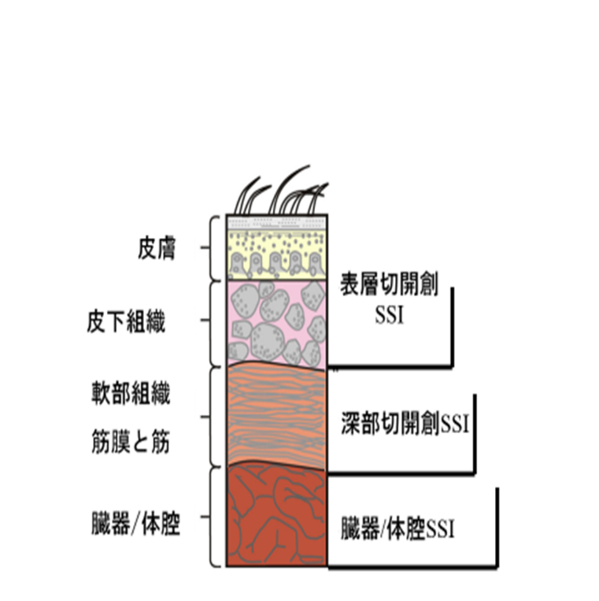
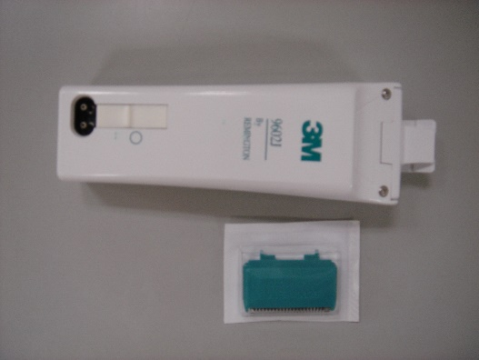

Ⅵ. 侵襲処置・医療器具関連感染防止策
4. 手術部位感染予防対策
- 手術部位感染とは
手術操作を直接加えた部位に発生する感染症を手術部位感染（Surgical Site Infection :SSI）という。

手術部位感染の分類
手術部位の発生した場所によって3つに分けられる
・表層切開創SSI
・深部皮下切開創SSI
・臓器体腔SSI
- 周術期におけるSSIのリスク因子
術前要因 | 術中要因 | 術後要因 | ||
患者側要因 | 医療側要因 | 環境要因 | 手術手技 | 医療側要因 |
年齢 栄養状態 肥満 喫煙 糖尿病 遠隔感染 微生物定着 術前入院 免疫機能 | 術前の皮膚の清潔 術前シャワーの方法 皮膚消毒方法 除毛の有無と時期 手術時手洗いの方法 予防的抗菌薬投与方法 | 環境清潔度 手術器材の滅菌 術衣 ドレーピング | 止血状況 血腫・死腔 ドレーン留置 人工物留置 | 創処置 ドレーン管理 血糖コントロール 交差感染 |
術中の微生物汚染 創傷分類 手術時間 | ||||
- SSI予防策
術前 | 術中 | 術後 | |
外来～ | 入院 | ||
禁煙 ＭＲＳＡ保菌の対応 血糖管理 | 皮膚の準備 ・必要最小限の除毛 ・身体の清潔 血糖管理 | 術野皮膚の消毒 周術期予防的抗菌薬の投与 体温管理 手術室環境 手術時手指消毒 手術器械 血糖管理 | 創部管理 ドレーン管理 血糖管理 |
- 術前管理
- 禁煙
- 術前管理
喫煙による血管収縮による組織の低酸素、ニコチンの創傷治癒遅延などから、SSI発症のリスク因子となるため、少なくとも8週間以上前からの禁煙を説明する。
- MRSA保菌者の対応
ムピロシン軟膏の鼻腔内塗布の適応を判断する。特に心臓血管外科や整形外科人工関節置換術では積極的に検討する。更に、心臓血管外科、整形外科人工関節置換術では、周術期予防的抗菌薬における抗MRSA薬の必要性を検討する。
- 皮膚の準備

除毛
- 皮膚の準備
- 手術部位や術野の体毛が手術の支障となる場合のみ、手術用クリッパーを用い、必要最小限の除毛を行う。除毛クリームを使用する場合はアレルギーに留意して使用する。除毛はできるだけ手術直前に行う。
- 剃毛はSSI発生リスクとなるため、実施しない。
除毛用クリッパー
- 身体の清潔
手術部位と周辺の皮膚の汚染を除去する目的で術前に患者にシャワー浴を行う。可能な限り手術直前に行う。また、腹部の手術時は、臍部を清潔にするために、臍垢の除去を行う。
- 血糖管理
周術期の血糖コントロールを適切に行うために、外来時点から血糖の管理を開始する。内分泌代謝内科の紹介基準に従って、院内紹介を行う。
2025.5.7イントラネット医療安全関連
「糖尿病患者外科手術前コンサルト基準」より引用
手術延期考慮
随時血糖300 mg/dL
空腹時血糖200 mg/dL
内分泌代謝内科への紹介基準
HbA1C 6.5%以上
随時血糖140mg/dL
空腹時血糖110mg/ dL
- 術中管理
- 手術時手指消毒
- 術中管理
抗菌性手指スクラブ剤と流水による揉み洗い法、またはアルコール性手指消毒薬によるラビング法のいずれでもよい。手洗い水は水道水で十分である。また、ブラシの使用は、手指の皮膚に悪影響を与えるため、避ける方が望ましい。
- 術野皮膚の消毒
皮膚消毒には、適切な消毒薬を用いる。健常な皮膚にはアルコール配合剤（クロルヘキシジングルコン酸塩含有アルコール製剤など）を用いることが望ましい。
- 周術期予防的抗菌薬
術中汚染菌を対象として選択し、手術操作の及ぶ部位の主な常在菌叢に活性を有する抗菌薬を使用する。詳細はJ.抗菌薬適正使用指針の項に準じて検討する。
また、抗菌薬の予防投与は手術中に汚染された部位の感染防止のために行うもので、執刀時に組織内濃度が高まるように術前30分前頃から経静脈的に投与し、皮膚切開を入れる前には投与を終了する。また、長時間の手術の場合は、薬剤の有効血中濃度の推移を考慮し、手術中に追加投与が必要になる。
- 体温管理
術中は正常体温を維持する。
- 血糖管理
周術期を通じて、過度な低血糖/高血糖にならないように、血糖値レベルを適切に管理する。
- 手術室環境
手術室内は隣接区域に対し陽圧を維持し、天井部から空気を供給し、床面付近から排気する。空気の流れを保つため、排気口の前には物を置かない。また、手術中の入室人数はできるだけ制限し、不要な入室者を控え、部屋の扉は常に閉めておく。
- 手術器械
周囲で埃が立つような環境では器材の展開を行わない。また、手術器材は適切に滅菌された器材を用い、フラッシュ滅菌（ハイスピード滅菌）器は、不注意で落とした器具の再処理など直ちに使用する器械のみについて適用できる。
- 術後管理
- 創部の管理
- 術後管理
閉鎖した手術創は、術後48時間は滅菌ドレッシング材（フィルム材やガーゼ）で被覆する。ドレッシング材の交換時は清潔な手袋・器材を使用し、交換前後は手指衛生を実施する。交換時には標準予防策を遵守し、無菌操作で行う。
創部の観察記録として、浸出液の有無や性状、発赤や腫脹、局所の圧痛などを記録する。
- ドレーンの管理
- ドレーンは不要となった段階で早期に抜去する。
- ドレーンは可能な限り閉鎖式のものを使用し、逆流させず、床に接触しないように管理する。
- ドレーンの被覆には、観察可能な透明フィルムを貼付することを基本とする。浸出液が多い時などはガーゼ等を使用し、周囲への汚染を防ぐ。
- ドレーンが挿入されたまま離床をすすめる場合には患者への指導を行う。
- ドレーン排液を扱う場合には標準予防策に準じ、前後の手指衛生と防護用具を適切に使用する。
- 感染を疑っていない場合は、ドレーン排液や抜去時のドレーンを培養に提出しない